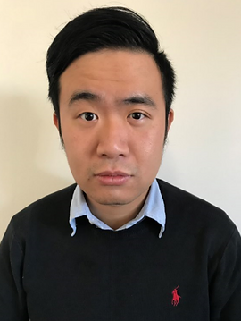

Assistant Professor
Ecoomics Discipine
Curtin University
Circle
Email
Scholar
LinkedIn
Twitter
GitHub
Contact:
lei.pan@curtin.edu.au
Economics Discipline
Curtin University
Perth, WA 6102, Australia
|  |
Welcome to my homepage! I am currently a Lecturer (Assistant Professor) in Economics and also the Economics Honours Course Lead in the School of Accounting, Economics and Finance at Curtin University, Australia.
I am also a Non-resident Fellow at the Centre for Development Economics and Sustainability (CDES), Monash University, Australia.
I was an Adjunct Faculty at Soochow University, Taiwan.
Prior to joining Curtin University, I was an Adjunct Lecturer in Economics in the School of Arts at Australian Catholic University
I obtained my Ph.D. in Economics from Monash University, Australia.
My primary research fields are international economics and monetary economics; secondary research fields are environmental economics, energy economics and tourism economics.
Methodologically, my work combines careful attention to macroeconomic theory and identification of causality. My research contains both theoretical and empirical work.
I develop theoretical model to explain counterfactual macroeconomic phenomenon.
last update: 2022/7/9